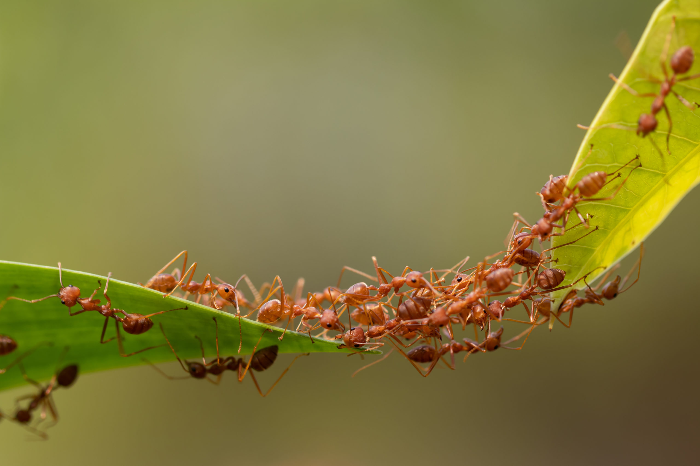
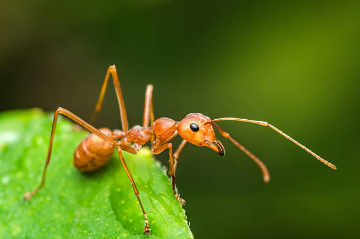
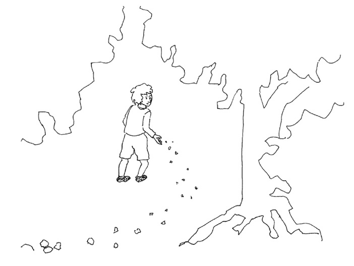
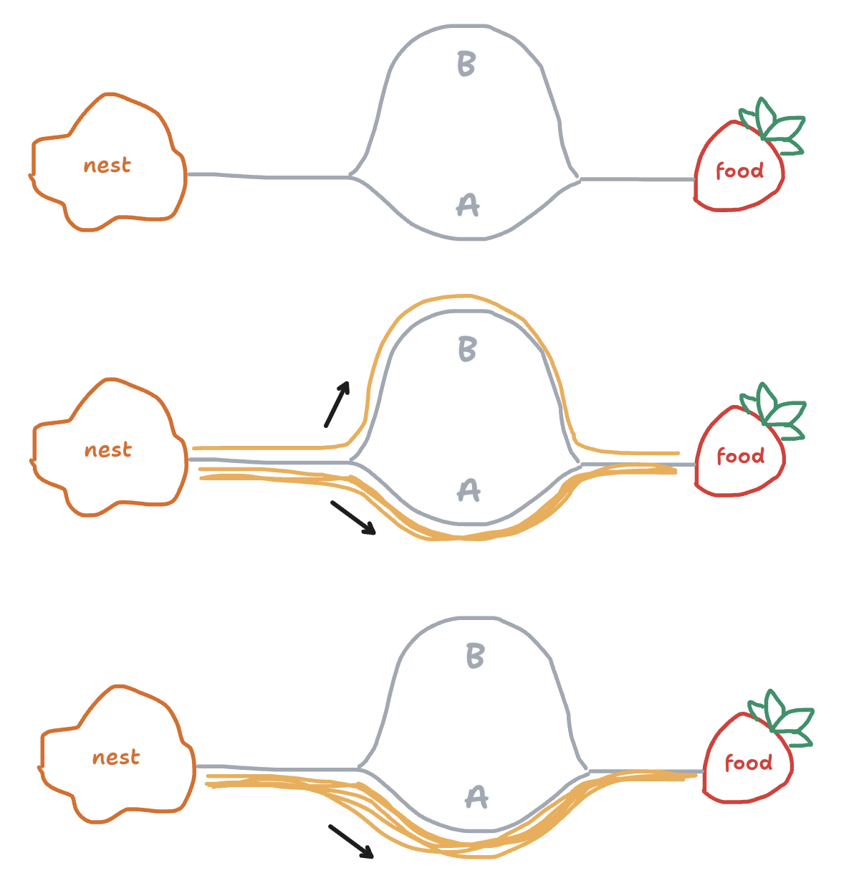
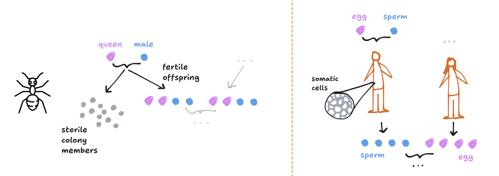
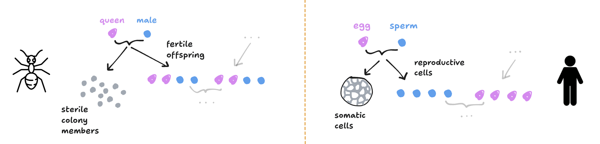
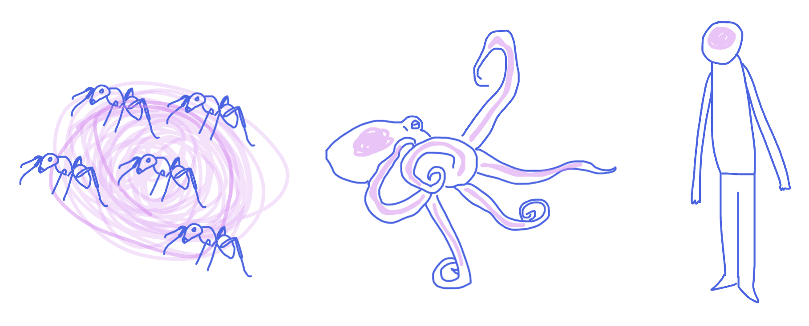

Book club is one of my lab’s summer traditions, and the book we choose is usually related to cognition. At the end of the summer we host a discussion and even sometimes thematically-aligned activities. This year’s selected book was Ant Encounters (2010) by Deborah Gordon, which kicked off the ensuing “ant summer.”
Dr. Gordon is a professor at Stanford known for her work studying the behavior of harvester ants, and her book aims to explain how ant colonies can do so much when nobody is in charge. Here are some of my key takeaways and thoughts.
Ants are extremely cooperative, but individual ants are very simple
We’ve all seen those remarkable videos of ants building bridges out of their own bodies, or of fire ants clumping together into a raft to avoid drowning in a flood. These displays appear to be the result of organized teamwork and planning, much like how for anything to get done in human life, there needs to be some hierarchical planning like a boss leading a team, or a president leading a country. Even though this system doesn’t always work perfectly for us and bureaucracy sucks and all, if we didn’t have hierarchy and planning, things would break down pretty quickly. But not for ants.
Ants somehow are able to cooperate without any centralized control. Even though there is a “queen” ant and “workers,” Gordon explains this is somewhat of a misnomer since ants don’t carry out orders the queen provides.
In fact, ants don’t actually seem to think much beyond themselves, and their behavior is largely explainable by predictable responses to local stimuli, generally to smells that they sense with their antennae. They smell what’s in their environment, like food, but also their fellow ants, and these smells have direct consequences for their actions. A particular smell will either make an ant more likely to continue what they are doing, less likely to continue what they are doing, or more likely to change their behavior altogether.

Some of the most important scents that influence ant behavior are the fatty molecules that coat ant bodies, called cuticular hydrocarbons. Ants that perform different roles in the colony generally have hydrocarbons with different scents, and ants seem to have different rules for how to act based on the particular scent of another ant they might encounter. Gordon writes that for an ant it might go something like, “If I meet another ant with odor A about three times in the next 30 seconds, the probability that I will go out to forage will increase by about 10%; if not, it will go down by about 20%” (48).
Like water molecules that combine to form complex currents, simple rules between ants give rise to coordinated colony behavior. But unlike water, the rules governing ant behavior are not immutable physical properties of the universe, but rather have been fine-tuned by evolution so that group behaviors support the needs of biological systems. Behaviors like allocating sub-tasks efficiently, keeping the colony safe, and navigating the world. Below, I explain how ant colonies achieve each of these by behaving according to simple rules.
Task allocation
Just like we have specialized jobs in our modern economy, so do ants. In carpenter ants, specifically, “major” (large) worker ants and “minor” (small) worker ants generally take on different roles. Major workers tend to focus on colony defense and tunnel excavation, while minor workers tend to focus on foraging for food and caring for the young. But just like you aren’t fixed to your job forever (for better or worse), ant’s roles are also not fixed. Sadly it isn’t the case that an ant will drop their foraging gig to fulfil a lifelong artistic passion, but ants will switch jobs if the colony needs it. For example, one study found that the removal of the small ants spurred the bigger ants to take over jobs the smaller ants carried out.
Without a centralized job-allocating force, Gordon argues that this efficient task allocation can be explained by a simple rule. Specifically, if a major meets a minor near the brood pile, they will turn away, otherwise they will stay. So, in a scenario where there are very few minors near the brood pile, there will be fewer interactions that turn the majors away, and so more majors will stay and perform brood care.
Foraging safely
Animals eat other animals. Ants eat other animals and also face the threat of being eaten by animals like birds. Ideally ants could just stay in their colonies all day to avoid this threat, but they need to forage for food. How can ants forage safely without getting eaten? The way ants address this follows a sacrifice-one-to-save-many method. Patroller ants first leave the nest in the morning, cued by the warmth of sunlight. These patrollers either survive and return to the colony, or die and fail to return. It’s only when patrollers return that the forager ants leave the nest. If the patrollers didn’t return, then the environment must be unsafe.
Patrollers have a specific hydrocarbon profile, and this is what signals the foragers to leave. One study found that simply dropping beads coated in patroller hydrocarbons into the nest is enough to stimulate foragers to leave. That foragers follow the simple rule of “if there is a patroller smell then I leave, if not then I stay” enables ants to make “smart” choices about when to leave the nest.
Navigation
If you are an ant, assuming a bird isn’t going to eat you if you leave the nest, how do you make your way back? And if you find food, how do you let other ants know where it is?
Ants solve both of these problems by leaving a trail of scent wherever they go (called trail pheromones). Think of this like a trail of breadcrumbs that any ant will follow. Patroller ants, for example, will explore the environment and leave a light trail of pheromone as they go. When they find food, they follow this path to return home while leaving a heavier trail of scent. When forager ants then leave the nest, they just have to follow the scented path to know where to find food.

This simple mechanism also enables efficient pathfinding. Let’s assume path A is shorter than path B. At the start, neither trail has more pheromone than the other, so ants have a 50% chance of exploring each path. As ants explore each path, they leave trail pheromone. But since path A is shorter, ants will reach the food and return more quickly, so trail pheromone will accumulate more quickly on this path. The result is that now when ants leave the nest, they will be drawn more to path A since it has a stronger scent, and it will be reinforced even more.

Again, the simple rule of “follow where the scent is” leads to efficient pathfinding, and has inspired algorithms for heuristically finding the shortest paths between nodes in a graph by applying probabilistic decision policies to move through adjacent states and updating the environment after each move. This paper outlines this kind of algorithm in detail.
Wait… is this play about us?
The way ants use local rules to achieve effective group behaviors is not far off from how our own bodies work. Gordon explains that in the early 20th century, entomologist W. M. Wheeler used the term “superorganism” to describe how an ant colony seems to behave like a single organism. This idea really intrigued me, and there seem to be two elements to it:
First, the structure of an ant colony is similar to that of cells in a body. Just like the cells of our body send chemical signals to one another to “coordinate” behavior in a largely de-centralized way (obviously we have a brain, but most cell interactions occur through chemical signaling with adjacent cells, called juxtacrine and paracrine signaling). After a cell receives a signal from its neighbor, it either increases or decreases the probability of carrying out some function, like the release of other signals.
Second, ant colonies reproduce in a way that mirrors the way organisms reproduce. Ant heredity is pretty weird in that nearly all the ants in a colony are female (that is, the queen and all the workers), and all these worker females are sterile. It’s only when the colony matures that the queen will give birth to fertile males and females. These ants will then leave the nest to mate with other fertile ants, starting new colonies.
With humans, on the other hand, the vast majority of individuals are able to reproduce. At first, these two systems of reproduction seem quite different.

But to see the similarities, we have to again think of ants in a colony as cells in a body. A human body is composed of somatic (body) cells, and a body produces gametes (sperm or egg). But both the somatic cells and gametes all originally came from the egg and sperm that made you. So really you can think of the egg and sperm as creating the somatic cells that form your body, as well as the sperm or egg cells that allow you to pass on your genes. Let’s rework the diagram to make this clear.

Doing so makes it clear that sterile colony members act a lot like human somatic cells and can be thought of as the “body” of the colony superorganism, while the fertile ant offspring act a lot like human sperm and egg cells and can be thought of as the “reproductive units” of the superorganism.
Ant colonies as a model of cognition
Now given that parallels can be made between ants and the cells in our body, does this mean parallels can be made between ants and the neurons in our brain (which after all are just cells in our body that use chemical signaling to function, with the advent that they also use electrical signaling)? Gordon repeatedly hints at this connection throughout the book. And if so, could ant colonies be thought of as a model of cognition?
For most organisms like ourselves, the brain, where the processing or “thinking” happens, is separate from the body, which performs actions. But for ants, the brain is the organism, exemplifying one extreme of embodied intelligence.
This is not as crazy an idea as it may seem, and there are creatures that exist somewhere in the middle of this continuum between brain-body separation and embodied intelligence. Octopuses, for example, have more distributed nervous systems where each arm acts largely independently of the central brain (I recently read Other Minds, by Peter Godfrey-Smith, that I will probably write a post about at some point, too). According to Godfrey-Smith, it could be that an octopus’s central brain loosely directs the general movement of each arm, but the arms act on their own for local tasks like probing objects.
While an octopus does have some central control, its brain is nevertheless more integrated with its body than is the case for humans. And even though we think of our brain and body being strictly divided, we do have some elements of embodied intelligence in our reflexes and other actions that occur without signals ever reaching the brain. So, the degree to which intelligence is “embodied” appears to be a spectrum, and on the far end of this spectrum are ants, which have no central control at all yet still exhibit complex behavior that arguably counts as “intelligent.”

Understanding intelligence
My primary takeaway from Ant Encounters is that patterns of simple interactions can lead to coordinated, complex behavior that is more than the sum of parts. What’s unfortunate is that zooming in to understand the parts can make us perceive the system as less capable than it actually is.
When we first look at the way ant colonies efficiently find food, coordinate labor, and even build bridges, we think, “they must be so smart!” But when we learn that each ant is only operating according to simple, local rules, we start to think that ants aren’t so smart after all. There is no central control, so nothing is “thinking.” But the same could be said about our neurons. Our brains do much more than each neuron can explain, yet we don’t think of ourselves as unintelligent because we see a body guided by a centralized control system.
When we try to understand intelligence, we are often blinded by the configuration of our own body. And it makes me wonder what other systems we've dismissed as unintelligent just because there was nobody clearly in charge.